import pandas as pd
from katlas.pssm import *
from matplotlib import pyplot as plt
from functools import partialdf = pd.read_csv('raw/psp_ks_dataset_2408.csv')df['kin_uniprot'] = df.KIN_ACC_ID.str.split('-').str[0]df.kin_uniprot.value_counts()kin_uniprot
P17612 1105
P06493 816
P68400 799
P17252 772
P12931 753
...
O54988 1
Q9BRS2 1
Q80X41 1
O55098 1
Q5U4C9 1
Name: count, Length: 834, dtype: int64nonhuman = (df.KIN_ORGANISM.value_counts()>13)[lambda x: x].index[1:]nonhumanIndex(['mouse', 'rat', 'cow', 'chicken', 'rabbit', 'pig', 'herpesvirus'], dtype='object', name='KIN_ORGANISM')df = df[df.KIN_ORGANISM.isin(nonhuman)]df.shape(4759, 17)df['sub_uniprot']=df.SUB_ACC_ID.str.split('-').str[0]df['sub_site'] = df.sub_uniprot+"_"+df.SUB_MOD_RSDdf.shape(4759, 19)# remove sub site duplicates for each kinase
df = df.drop_duplicates(subset=['kin_uniprot','sub_site'])df.shape(4734, 19)kin_idxs = (df.kin_uniprot.value_counts()>=30)[lambda x: x].indexpred_pspa=pd.read_parquet('raw/pred_new_pspa.parquet')
pred_cddm=pd.read_parquet('raw/pred_new_cddm.parquet')idxs = pred_pspa.index.str.split('_').str[0]idxs.isin(df.kin_uniprot).sum()np.int64(322)idxs.isin(kin_idxs).sum()np.int64(34)df['site_seq'] = df['SITE_+/-7_AA']psp_nonhuman = get_cluster_pssms(df,cluster_col = 'kin_uniprot',count_thr=30)100%|███████████████████████████████████████████████████████████████████████████████████████████| 391/391 [00:00<00:00, 706.09it/s]idx_overlap = list(set(idxs)&set(psp_nonhuman.index))ori_index = pred_pspa.indexpred_pspa.index=pred_pspa.index.str.split('_').str[0]pred_pspa = pred_pspa.loc[idx_overlap]
nonhuman_pspa = psp_nonhuman.loc[idx_overlap]Comopare the two
def score_df(target,pred,func):
cols = list(set(target.columns)&set(pred.columns))
distance = [func(target.loc[i,cols],pred.loc[i,cols]) for i in target.index]
return pd.Series(distance,index=target.index)jsd_df = partial(score_df,func=js_divergence_flat)jsd_score = jsd_df(nonhuman_pspa,pred_pspa).sort_values()pred_pspa,nonhuman_pspa = pred_pspa.align(nonhuman_pspa,join='inner')for idx,score in jsd_score.items():
pssm1 = recover_pssm(nonhuman_pspa.loc[idx])
pssm2 = recover_pssm(pred_pspa.loc[idx])
plot_two_heatmaps(pssm1,pssm2,f'{idx}:{score:.3f}','PSP','Predicted',scale_01=False)
plt.show()
plt.close()
# break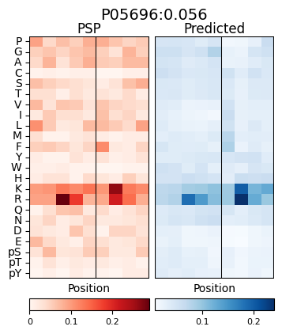
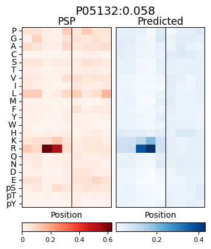
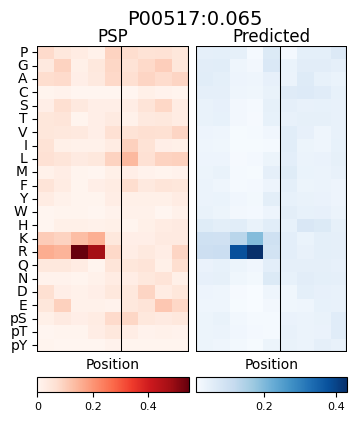
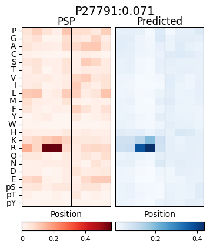
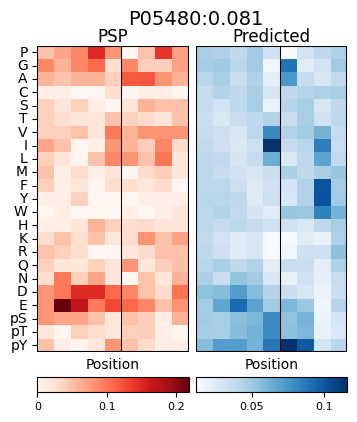
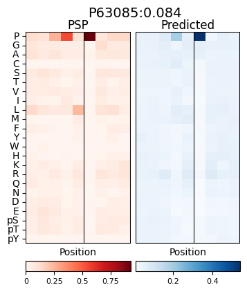
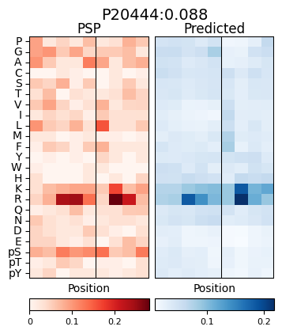
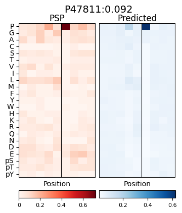
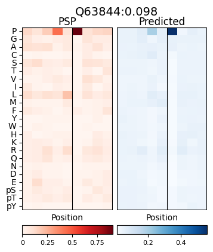
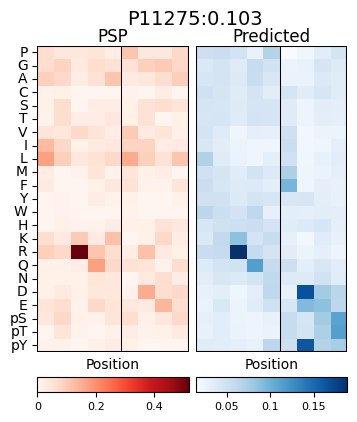
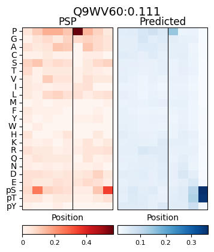
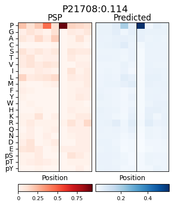
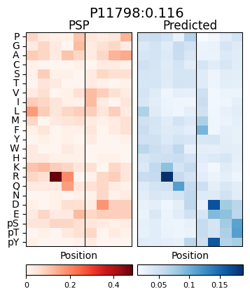
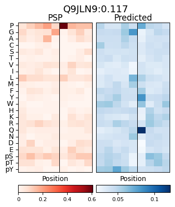
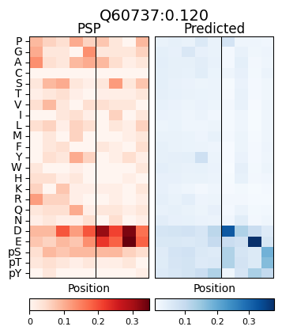
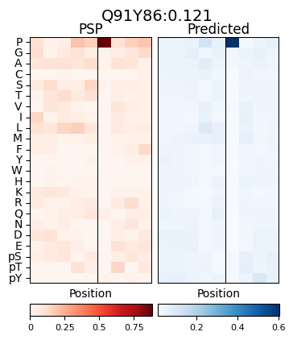
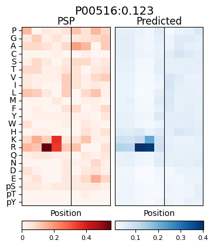
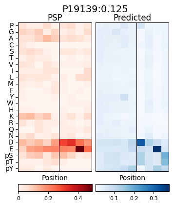

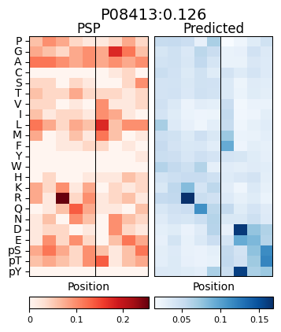
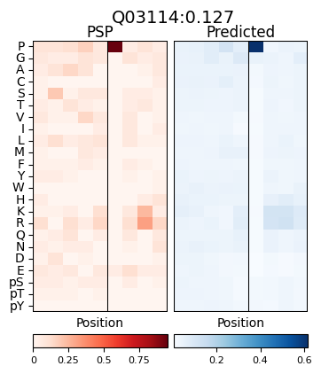
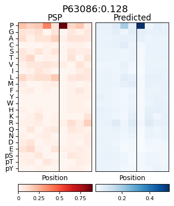
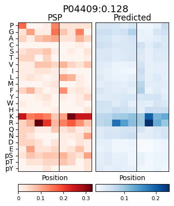
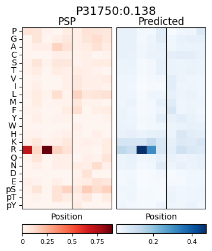
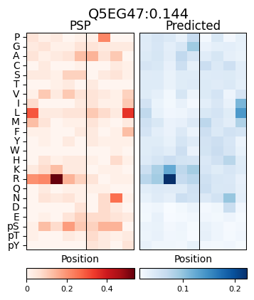
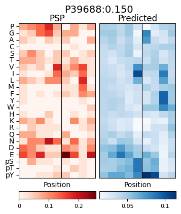
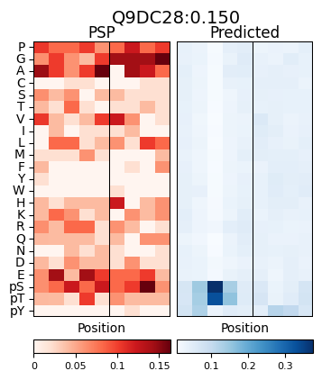
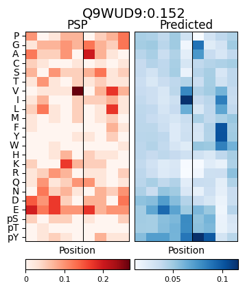
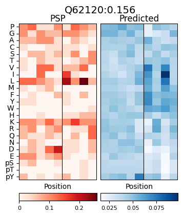
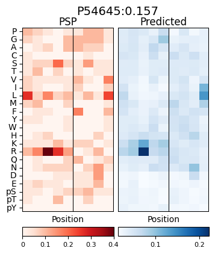
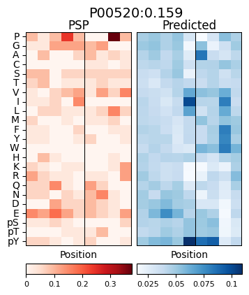
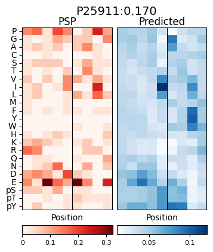
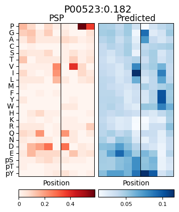